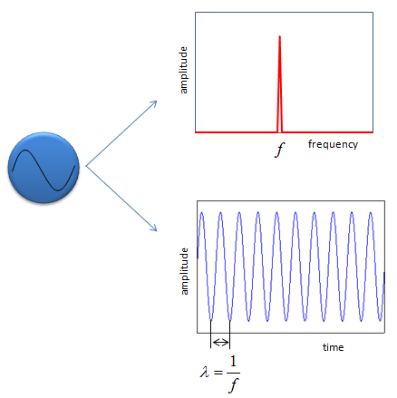
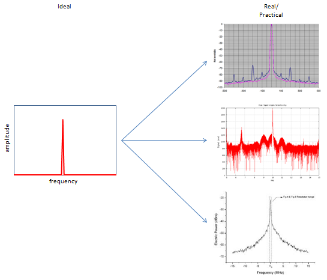
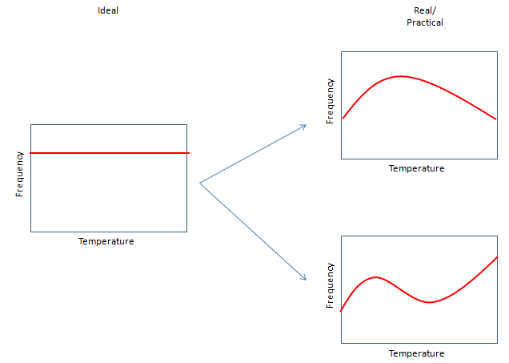
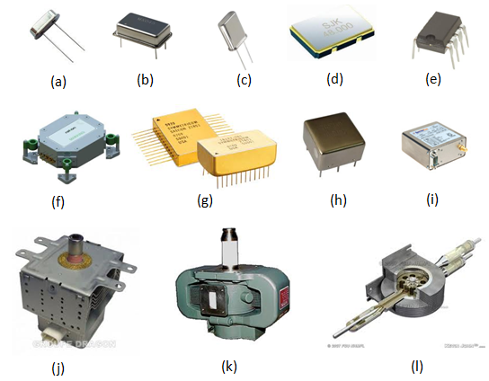

|
RF - Oscillator Home : www.sharetechnote.com |
|
Oscillator is a kind of heart in all RF system and the performance of this component would influence almost every other components in the system and will have crucial effect on the final data accuracy. The function of Oscillator is very simple (at least in theory). It is just to create a pure sinosoidal wave as shown before.

Ideal vs Real Oscillator
As any other components, there is pretty big gap between the ideal performance and realistic performance in oscillator as shown below.
On the right side, you see three different frequency responses of realistic oscillators.
The first (top) plot shows the most common non-ideal (undesired) issues. The highest center peak is the one that we want to get from the oscillator, but all the other smaller peaks around the center peak is the one that we don't want. In this case, the gap between those small peak seems to be pretty constant which would give us at least some clue for troubleshooting. (I would not go any deeper on this type of small peaks here). The second (middle) plot shows a lot of small peaks around the center peak, some of the peaks seems to be in similar gaps and some of them are now. Overall.. the frequency response around the center peak is not so symetric. The third (bottom) plot shows the center peak magnified along frequency axis (horizontal axis). The center peak of ideal oscillator should show very sharp beak however much you magnify it, but this one shows a kind of widening skirt as it goes down to the bottom of the peak. This is caused by phase noise of the oscillator and this is what everybody wants to avoid, but impossible to remove completely.

There is another important characteristics which makes a big difference between ideal and realistic oscillators. It is about frequency changes of oscillator over temperature. Everybody wants to have an oscillator in which the frequency does not change at all with temperature as shown on the plot to the left. But this kind of oscillator exists only in our idea, not in reality. The oscillators in reality shows the frequency response over temperature as shown on the right plots. it shows the frequency changes over temperature and this kind of frequency change can influence greatly on the performance of a communication system. There are several techniques to compensate this kind of frequency changes (e.g, PLL, Oven Control etc) but it is almost impossible to completely remove these frequency changes.

Types of Oscillators
There are many different types of oscillator. you would see the oscillators like (a)~(d) if you break any of your electronic product. If you break some electronic equipment which requires high frequency accuracy, you would see the oscillators like (f)~(g) which is called OCXO(Oven Controled Crystal Oscillator). If you see the product like (j)~(l), it would not look like an oscillator, but I categorized these into an oscillator since the function of these is basically same as those oscillators that we commonly see. These are called 'Magnetron' which is usually used in Microwave oven or very high power transmitter like radar system.

If you want to know more about oscillators in more commercial context, I would recommend Rakon (http://www.rakon.com). You will get not only the information on diverse commercial product but also many application notes which will be very helpful.
|